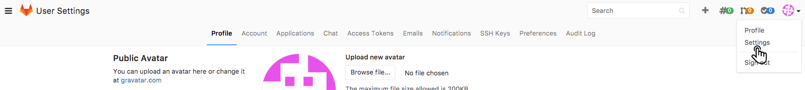
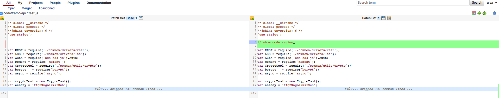

git 在Windows系统中的使用
1.git下载及安装
官网 http://git-scm.com/downloads 下载windows版git
打开安装包，开始安装，安装过程如下：


2. git bash 配置
先去自行创建gitlab账号，然后进行如下操作
2.1 检查SSH keys是否存在
输入下面的命令，如果有文件id_rsa.pub 或 id_dsa.pub，则直接进入步骤2.3将SSH key添加到Gitlab中，否则进入下一步生成SSH key
ls -al ~/.ssh
2.2 生成新的 SSH KEY
ssh-keygen -t rsa -C "123@qq.com" //这里是gitlab的邮箱
路径选择：使用该命令之后, 会出现提示选择ssh-key生成路径,选择在根目录下（默认会在相应路径下（/your_home_path）生成 id_rsa 和 id_rsa.pub 两个文件）
密码确认：这里我们不使用密码进行登录, 用密码太麻烦，直接回车。当然，如果你想使用密码登录，那就输入密码之后回车。
2.3 将 ssh key 添加到 Gitlab 和 gerrit 中
输入下面命令可复制 id_rsa.pub 文件中的 SSH key，将这些复制到 Gitlab 和 gerrit 的 Add SSH key 页面即可(注，页面具体操作见下 3.Gitlab 和 gerrit 中添加 ssh key)。
clip < ~/.ssh/id_rsa.pub
2.4 配置个人信息，键入指令
git config --global user.name "primo" //这里是使用gitlab的用户名
git config --global user.email "123@qq.com" //这里是gitlab的邮箱
3. Gitlab 和 gerrit 中添加 ssh key
3.1 Gitlab 中添加 ssh key
登录 gitlab ,点击右上角用户头像，点击 Setting

进入设置界面，点击 SSH Keys

将复制好的ssh-key粘贴到 Key ,点击 Add key，添加成功

3.2 gerrit 中添加 ssh key
登录 gerrit ,点击右上角用户名，点击 Setting
进入设置界面，点击 SSH Public Keys --> Add Key ,将复制好的ssh-key粘贴到 Add SSH Public Key ,点击 Add,添加成功

4. git-review 的安装
4.1 首先安装Python以安装git-review
4.1.1 登录 https://www.python.org/downloads/ 下载python
4.1.2 安装时保持Python安装在默认目录（如C：\ Python27），而不是安装在任何其他目录。
4.1.3 windows环境下面配置pip环境变量:前提是设置python脚本目录的环境变量，假设python的安装路径为c:\python2.6，则修改我的 电脑 --> 属性 --> 高级 --> 环境变量 --> 系统变量 ，添加
变量名: python //变量名可随意
变量值: c:\python2.6 //使用浏览文件的方式找到安装好的python不容易写错路径
在系统变量中的Path添加环境变量
%python% //即变量名
对于2.7及以上版本，python 将自动安装 pip。
4.2 在 Git Bash 使用以下命令安装 git-review：
pip install git-review
5. gitlab 中创建项目
为便于项目的分组管理，要先创建 Group ，点击 New Group

填写 Group 名及 Description ，然后点击 Create group
创建完成并进入新 Group ,点击 New project 来创建新项目

填写 Project name 及 Project description ,点击 Create project
创建完成的项目如下图，点击复制图标即可复制项目的ssh地址

6. gerrit 中创建项目
gerrit中点击 Projects --> Create New Project 来创建项目

填写 Project name ( gerrit 中 Project name 须与gitlab中项目名相同),选择 Rights Inherit From,点击 Create Project
创建完成的项目如下图

7. git 基本命令行
注，命令行在git bash 中运行
7.1 仓库克隆
git clone <ssh-url> //git项目ssh地址，从gitlab中获取
7.2 添加gerrit远程仓库
git remote add gerrit <gerrit-url> // gerrit的ssh地址，从gerrit中获取
7.3 代码上传流程
1.将代码加入暂存区
git add -A
2.提交代码至本地工作区
git commit -m ‘your commit message’ -a
3.上传代码至gerrit中
git review
4.获取最新代码
git pull --rebase
8. gerrit 中代码审核
提交代码后，审核人员要对修改的代码进行审核。登录 gerrit 进入 All-->Open ，可看到有新提交的项目，点击项目名称
进入审核的界面。File Path 中显示的是进行过修改的文件，点击文件名称

进入修改的文件页面，审核者可以在此看到提交人员的具体修改内容

在审核界面，0 表示审核通过代码，-1、-2 表示审核不通过，点击 Post

点击 Submit 提交审核，审核通过后提交人员修改的代码会进入gerrit中的项目里，审核不通过则提交的代码不能进入 gerrit 的项目中